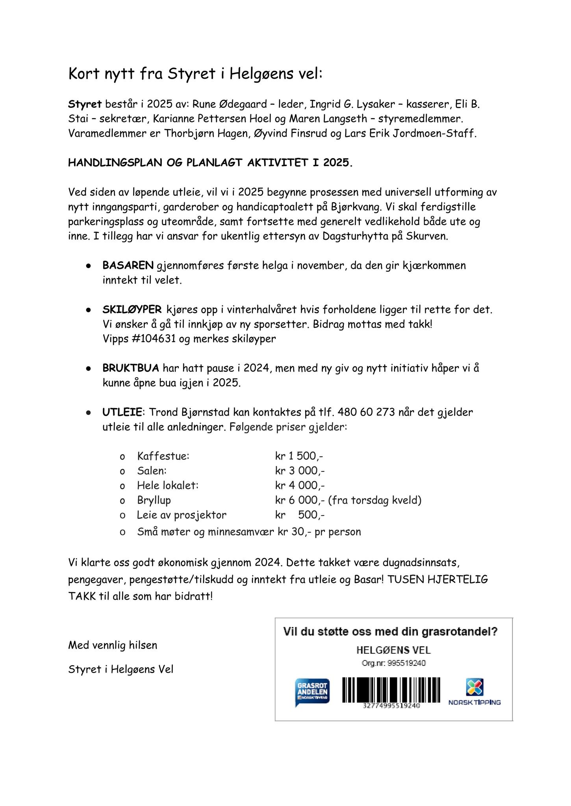

Nyheter
Kort nytt fra styret i Helgøens Vel (2025)
Styret for 2025 består av Rune Ødegaard (leder), Ingrid G. Lysaker (kasserer), Eli B. Stai (sekretær), Karianne Pettersen Hoel og Maren Langseth (styremedlemmer). Varamedlemmer er Thorbjørn Hagen, Øyvind Finsrud og Lars Erik Jordmoen‑Staff.
Handlingsplan og planlagt aktivitet i 2025:
- Prosjekter for universell utforming av inngangsparti, garderober og handicaptoalett på Bjørkvang. Parkeringsplassen og uteområdet ferdigstilles, og generelt vedlikehold fortsetter både ute og inne. Styret har også ansvar for ukentlig ettersyn av Dagsturhytta på Skurven.
- Basaren: gjennomføres første helg i november og gir kjærkommen inntekt til vellet.
- Skiløyper: kjøres opp i vintersesongen dersom forholdene ligger til rette. Det samles inn bidrag til ny sporstretter via Vipps #104631 (merk «skiløyper»).
- Bruktbua: har hatt pause i 2024, men med ny giv og initiativ håper styret å gjenåpne bua i 2025.
- Utleie: Trond Bjørnstad kan kontaktes på tlf. 480 60 273 for utleie. Prisene som gjelder for utleie finner du under Regler.
Takk til alle som bidro til godt økonomisk resultat i 2024 gjennom dugnadsinnsats, pengegaver, tilskudd og inntekter fra utleie og basar.
Dersom du ønsker å støtte Helgøens Vel via Grasrotandelen, kan du bruke organisasjonsnummer 995 519 240.
